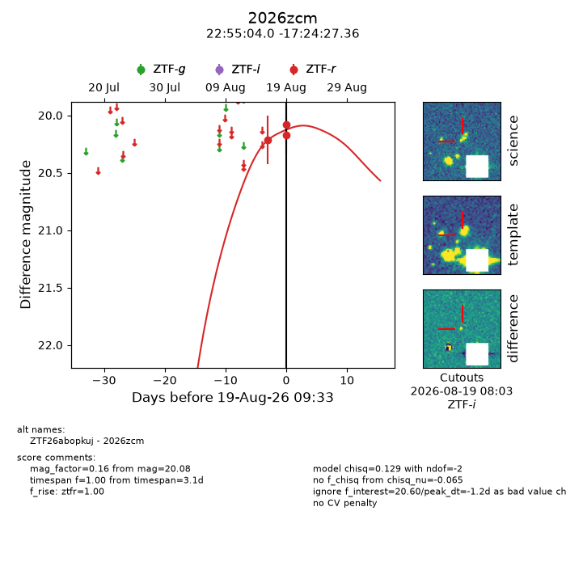
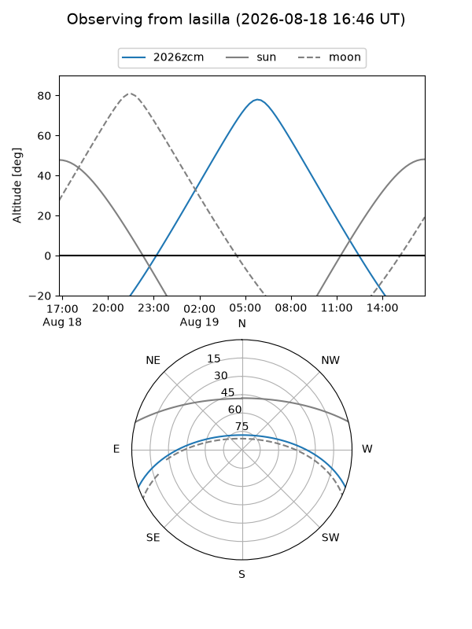
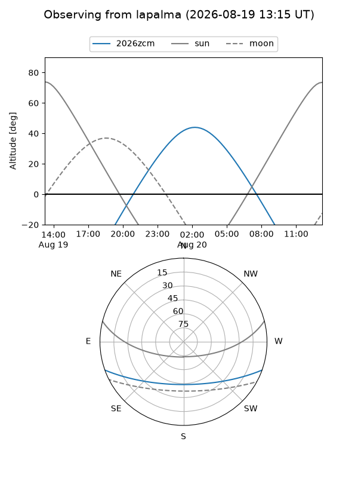
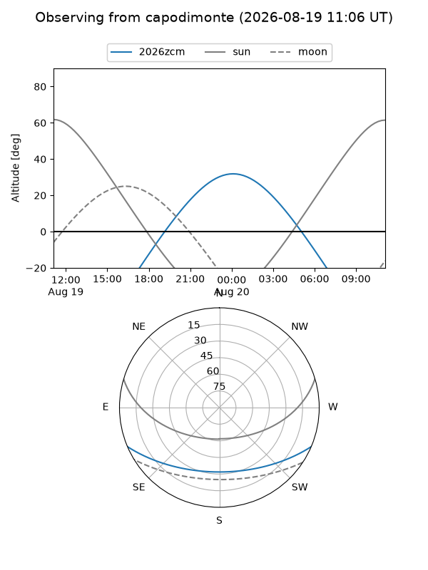
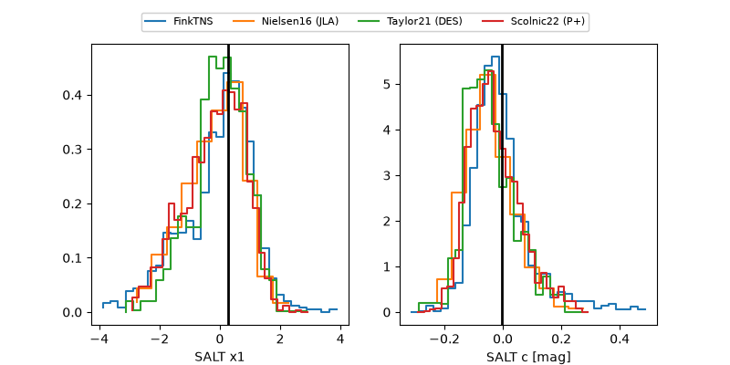

2026zcm
Target 2026zcm at 2026-08-19 09:37
Aliases and brokers:
FINK-ZTF: ztf.fink-portal.org/ZTF26abopkuj
Lasair-ZTF: lasair-ztf.lsst.ac.uk/objects/ZTF26abopkuj
ALeRCE-ZTF: alerce.online/object/ZTF26abopkuj
YSE-PZ: ziggy.ucolick.org/yse/transient_detail/2026zcm
TNS name: wis-tns.org/object/2026zcm
Direct TNS query: direct search
alt names
ZTF26abopkuj (ztf,fink_ztf)
2026zcm (tns,yse)
Coordinates:
equatorial (ra, dec) = 343.7666,-17.40760
equatorial (HMS+DMS) = 22:55:03.98,-17:24:27.36
galactic (l, b) = (46.7308,-61.46169)
Flags:
TNS type: nan
peak dt: -1.2
Photometry:
last ztfr=20.08
3 ztfr detections
Lightcurve

Visibility



Additional plots
